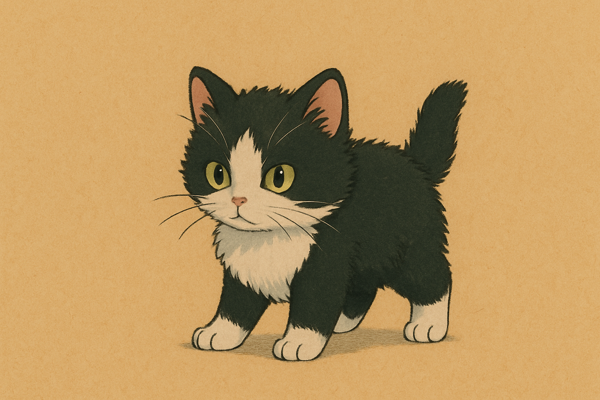

Un día, hace 3 años, llegó Oreo a nuestras vidas. una peluza ojona, despelucado, y con mucho miedo. Su refugio era la habitación de ella. Mantenía oculto bajo la cama y no salía para nada. Mi amor y yo decidimos buscar un nombre que encajara con las carectiristicas de él. Hubieron varias ideas... Pinguino, Sylvestre, panda. Sin embargo el nombre que más nos pareció que encajaba con la descripción de él, era Oreo
Oreo comenzó a crecer y poco a poco se volvió un amor incondicional entre los dos. Oreo le da besos a Jeimy, la lame y cuando esta calienta trata de cogerse al brazo de ella. Pero no tengo duda de que ellos. No puedo describir Jeimy cuanto ama a su gato. Pero no me queda duda, de que se volvió un fiel compañero para ella
En este momento Oreo ya es un gato adulto, pero en los ojos de jeimy todavía sigue existiendo Aquel despelucado, ojon y chillon gato que un día llegó cuando más lo necesitaba.
No espero que me perdones por no haber hecho esta página antes. Tampoco lo hice para demostrarte que soy un buen novio. La hice, porque se lo importante que es oreo para ti y lo que significa estar lejos de tu hogar. Pues él forma parte de nuestro hogar. Espero que mañana cuando veas esto, puedas comenzar el día alegre y recordar que acá siempre estará tu hogar. TE AMO Y TE EXTRAÑO MUCHO